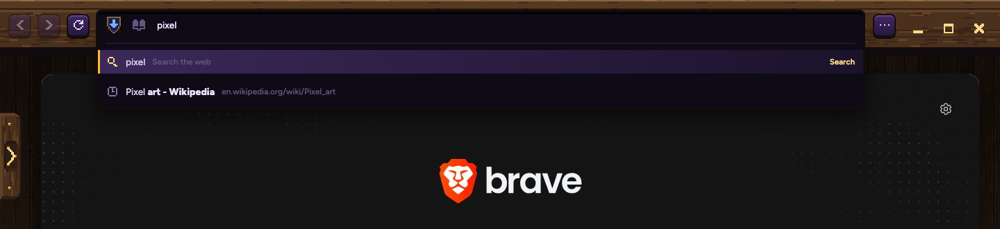
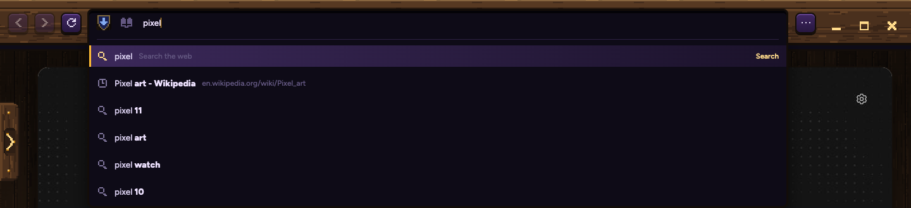
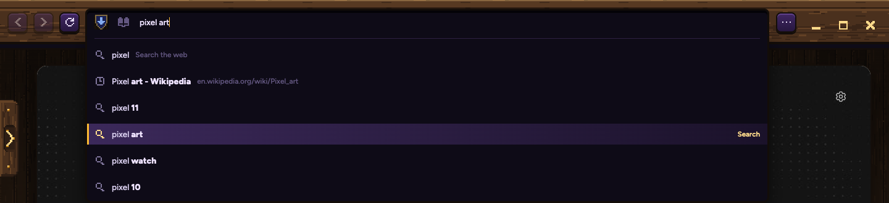
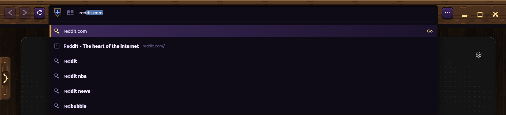
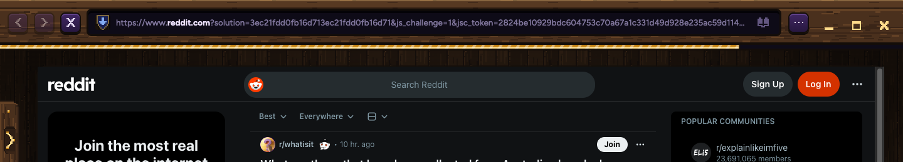
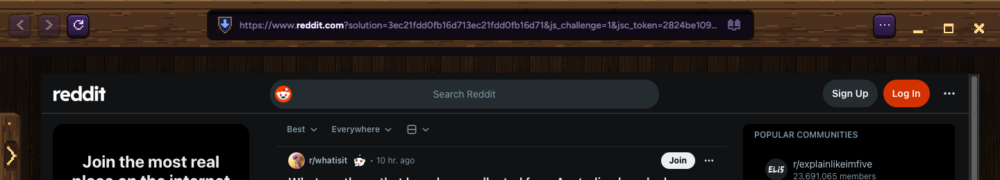
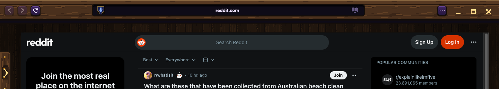
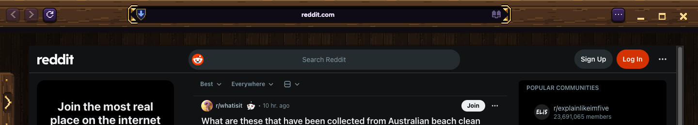
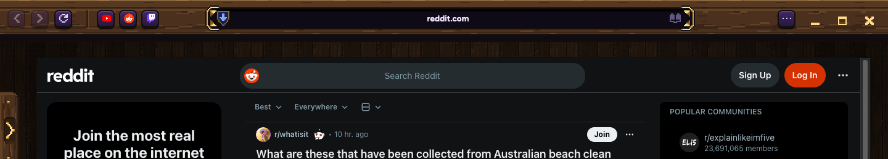

Samara guesses what you want as you type, the way Chrome does, with your own tabs and history first. And five ways to use the band's spare wood.

The guesses come from your search engine: Brave here, Yandex in the secret window. Your letters stay plain; the rest of each guess is bold.

Down to "pixel art", and the bar says it; Enter searches it. Esc brings back what you typed.

Type "red" and the rest of reddit.com fills in, highlighted. Enter goes there; keep typing and it steps aside. Only your own history and bookmarks ever fill in, never a guess.

Each picture is Samara's real band over a real page. Pick any steps you like; they don't have to go together.
A · Today. The bar runs nearly the whole width, and long addresses fill it with noise.

B · Calm. The bar sits in the middle and shows just the site's name. Click it (or ⌘L) and it slides out to full width with the whole address and your suggestions, like picture 2 above.

C · Thinner. The same, with a slimmer band: the page starts 12 pixels higher.

D · Gold corners. The bar wears the tab list's gold corner pieces, so it reads as a framed plaque on the wood.

E · Your sites. Your favourite sites as carved keys on the left wood, one click to open.
